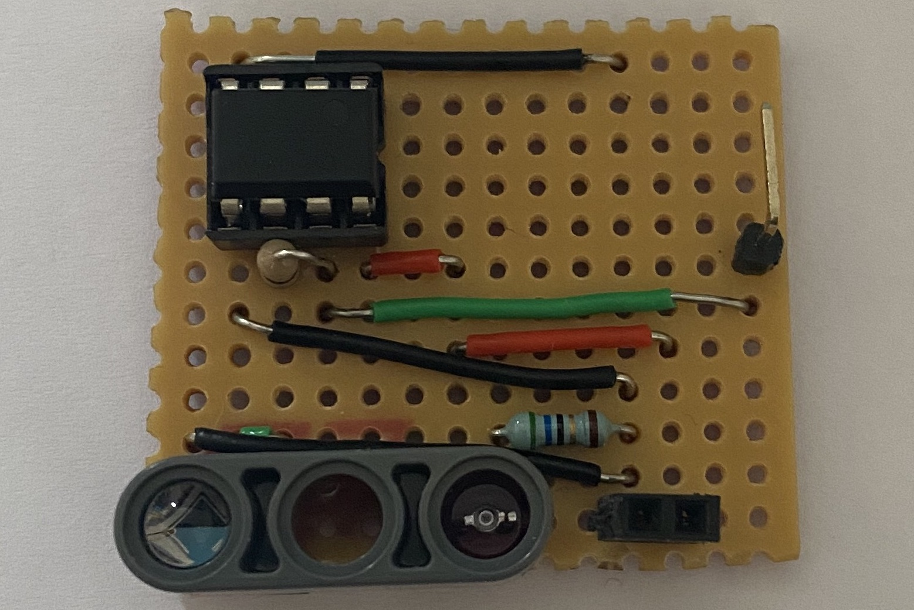
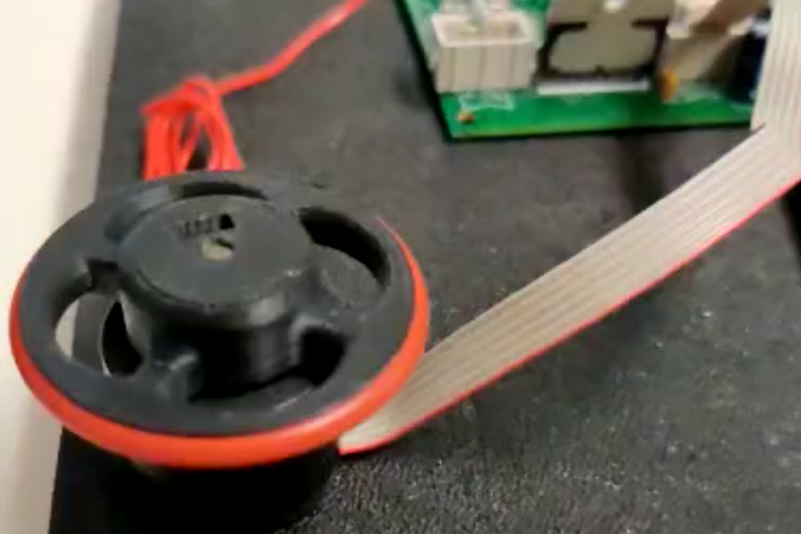
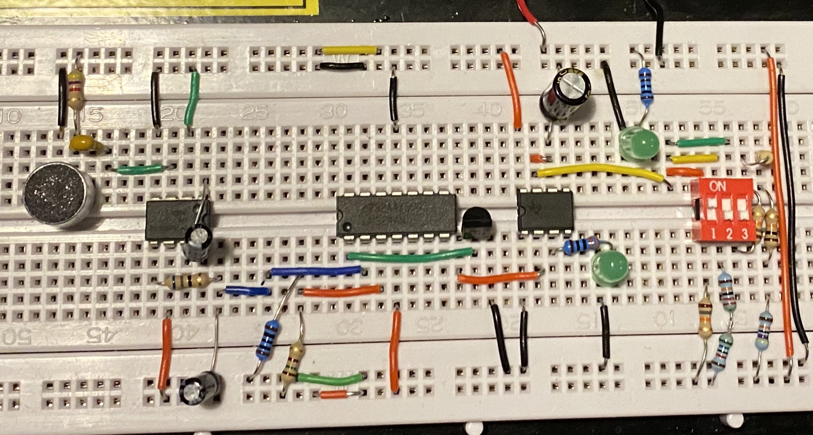
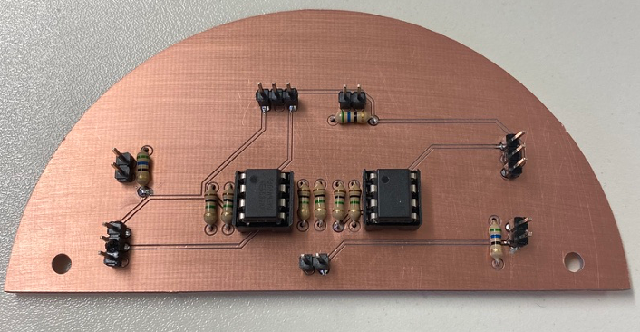
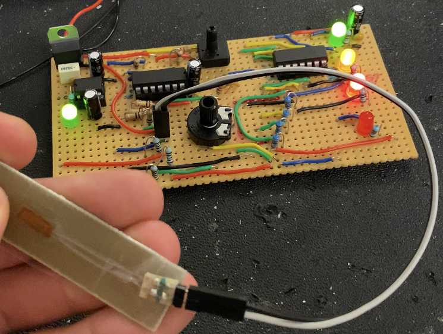
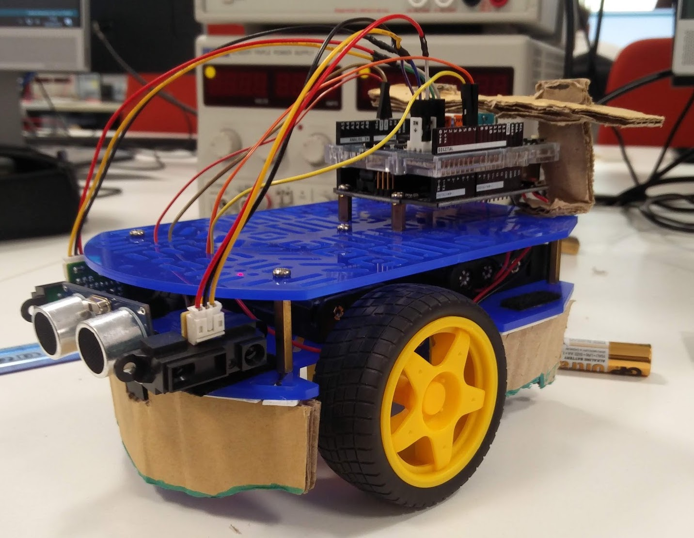

Distance Sensor (Prototype)
This is a distance sensor I designed and built for a small maze solving robot. The sensor was connected to a dsPIC30F4011 and using the ADC on the microcontroller the output could be displayed on the terminal. Doing this also allowed for the code to be written to gather the sensor data for the mapping alorithm for the robot.

Drivig a motor with PWM
As part of the maze solving robot, I had to design a system to be able to both drive a set of motors, as well as know how far the robot had moved. Using the dsPIC30F4011 microcontroller the motors could be controlled through a PWM signal and a short algorithm. The motors used for this robot also contained a set of encoders. These encoders can be used to determine how fast the motor is turning, as well as how many turns it has made, the number of turns can then be used to tell how far the robot has moved

Sound Activated Sensor
This is a prototype for a sound activating sensor. This idea is that the microphone would trigger the circuit at the sound of a human voice from around 2 meters away. Once the circuit was activated, it would stay active for a length of time, this could be changed through the switch on the righthand side and could be changed between 2 seconds (for testing), 30 seconds, and 1 miniute.

Distance sensor PCB
This sensor was designed to fit a micromouse-style robot for a module at university. It was my job to design and build the IR sensors. The IR transmitters and receivers were designed so they could be removed for easy storage and transport, they were removed for this photo but would be connected to the pins on the board.

Pressure Sensor with LED Indicator
For one of my university assignments I created a strain gauge that would visually display the pressure applied to it through a set of LEDs. The sensitivity of the sensor could be adjusted through the potentiometer.

Simple Navigation Robot
For this project the robot pictured would have to navigate through a winding corridor. Once it reached the end, it would have to locate a box within a 1 meter radius. It would then need to find and stop as close as possible to the box without making contact, scoring points depending on how close it can get to it.
{kind=link}
{kind=link}
{kind=link}
{kind=link}
{kind=link}
{kind=link}